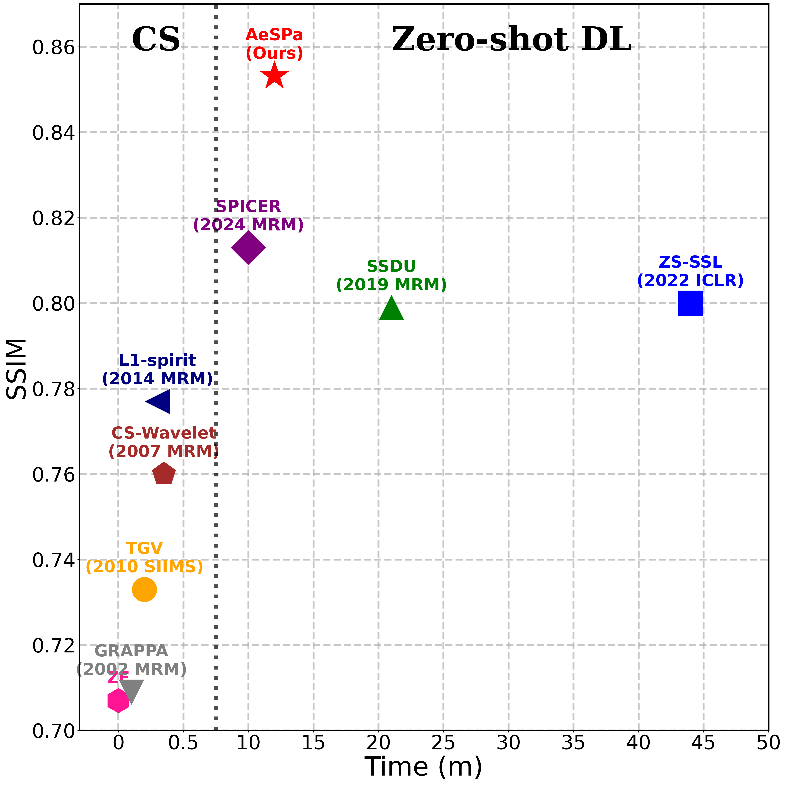
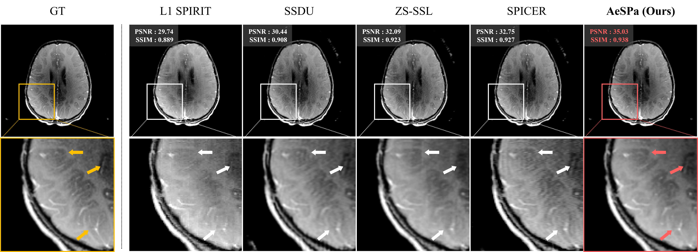
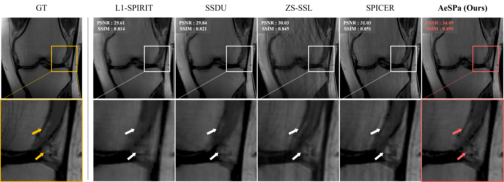
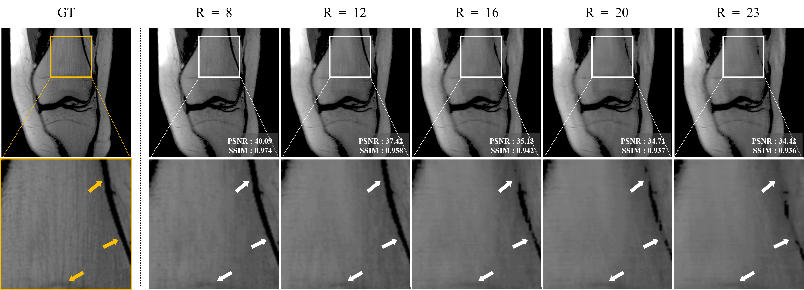

Method

AeSPa Pipeline. The overview of the proposed method. The blue text denotes the update input for the coil-combined image estimation model, while the green text represents the update input for the sensitivity map estimation model.
This study introduces a novel zero-shot scan-specific self-supervised reconstruction method for magnetic resonance imaging to reduce scan times. Conventional supervised reconstruction methods require large amounts of fully-sampled reference data, which is often impractical to obtain and can lead to artifacts by overly emphasizing learned patterns. Existing zero-shot scan-specific methods have attempted to overcome this data dependency but show limited performance due to insufficient utilization of k-space information and constraints derived from MRI forward model. To address these limitations, we introduce a framework utilizing all acquired k-space measurements for both network inputs and training targets. While this framework suffers from training instability, we resolve these challenges through three key components: an Attention-guided K-space Selective Mechanism (AKSM) that provides indirect constraints for non-sampled k-space points, Iteration-wise K-space Masking (IKM) that enhances training stability, and a robust sensitivity map estimation model utilizing cross-channel constraint that performs effectively even at high reduction factors. Experimental results on the FastMRI knee and brain datasets with reduction factors of 4 and 8 demonstrate that AeSPa achieves superior reconstruction quality and faster convergence compared to existing zero-shot scan-specific methods, making it suitable for practical clinical applications.

Experimental results on the FastMRI knee dataset using 1D Gaussian sampling with R = 8 with 16 ACS lines.
AeSPa Pipeline. The overview of the proposed method. The blue text denotes the update input for the coil-combined image estimation model, while the green text represents the update input for the sensitivity map estimation model.

Qualitative results for accelerated MRI reconstruction on the FastMRI brain data}. Reconstruction was performed using 1D Gaussian random sampling with R = 4.

Qualitative results for accelerated MRI reconstruction on the FastMRI knee data. Reconstruction was performed using 1D Gaussian random sampling with R = 8.

Qualitative results of our model with varying reduction factors. The performance is demonstrated for 1D Gaussian random sampling with reduction factors ranging from R = 8 to 23.
@inproceedings{joo2025aespa,
title={AeSPa : Attention-guided Self-supervised Parallel imaging for MRI Reconstruction},
author={Joo, Jinho and Kim, Hyeseong and Won, Hyeyeon and Lee, Deukhee and Eo, Taejoon and Hwang, Dosik},
booktitle={Proceedings of the Computer Vision and Pattern Recognition Conference},
pages={5217--5226},
year={2025}
}